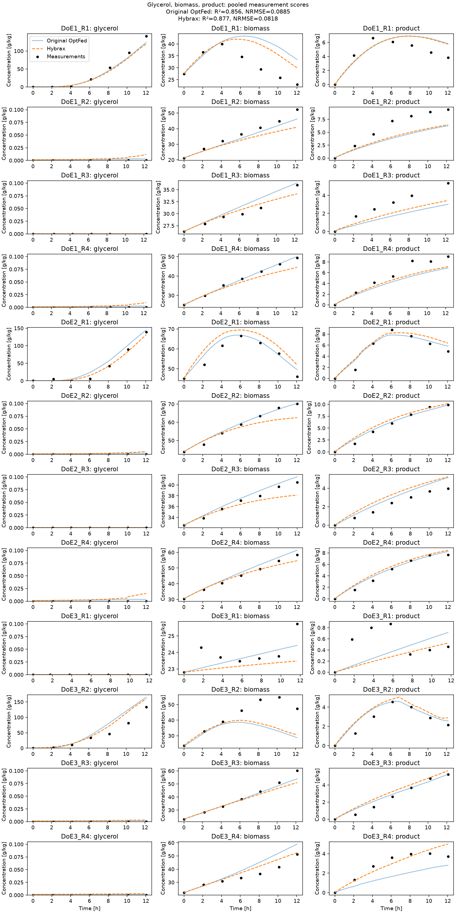

OptFed mechanistic model¶
Hybrax was primarily designed for hybrid models but fully mechanistic models are also supported. Here we illustrate this using the reduced OptFed model (Schlögel et al. [1]) as example. This means that, instead of training a neural network to predict rates, we define the rate equations of the mechanistic model with Hybrax and fit its eleven free parameters on the concentration data directly.
The kinetics of the model are determined by three rate equations: for substrate (glycerol)
uptake, substrate spent on maintenance and substrate spent on product formation.
Temperature affects product formation through an
Eyring rate law. Accumulated generations, or cell doublings since induction,
inhibit production. The published model has twelve kinetic parameters; eleven
are fitted here, while the glycerol saturation constant remains fixed at
0.001 g/kg, as in the authors’ final ODE implementation. The per-substrate
yields of biomass and product also remain fixed.
This example uses the twelve experimental fed-batch processes published with OptFed, originating from Kittler et al. [2]. The raw data can be found on GitHub. The model fits them jointly with one shared set of eleven parameters.
How the pieces fit¶
This example follows the standard Hybrax pipeline. Each step has its own file
in examples/gallery_optfed/:
Data (
import_data.py→data.json). The importer converts the published CSVs into a HybraxBioProcessCollection: measurements, feeds, sampling withdrawals, and temperature for each process. Each process also carries aReactionOde, which declares the named rates and the reaction part of each state’s derivative. The bundleddata.jsonis the output of this step, so you only need to rerun the importer to regenerate it.Prepare (
hybrax prepare,prepare-config.json). Prepare validates the collection, checks that all processes share the same state and control layout, and writesprepared/prepared.json. Training reads this artifact rather thandata.json.Train (
hybrax train,train-config.json+custom.py). The config points tocustom.py, and Hybrax looks up its hook functions by name. Herebuild_reaction_modulereturns the mechanisticRateModulethat computes the named rates, and the other hooks choose the solver, the learning-rate schedule, and the scales.Forward (
hybrax forward,forward-config.json). Forward simulates the fitted model and writes trajectories and plots.
If this is your first Hybrax model, work through the
tutorials first;
Tutorial 4 introduces custom.py.
The reaction module and
Customization document the interfaces used
below.
Load the published data¶
The bundled data.json
is a Hybrax BioProcessCollection. It is generated from the
four CSVs from the OptFed GitHub repo.
The full importer code is in the collapsible box at the end of this section.
Each process contains the measured glycerol, total biomass, and product
concentrations, the carbon and base feeds, the sampling withdrawals, and the
measured temperature. Time zero is induction. OptFed uses a mass-based balance,
so volume stores reactor mass in kg, feed amounts are in kg, and
concentrations use g/kg. Temperature is in Kelvin. The importer smooths the
cumulative feeds, and Hybrax uses their derivatives as feed rates.
How the importer converts the raw CSVs
sampling_points.csvsupplies initial reactor mass and raw glycerol, total biomass, and product concentrations. As in OptFed’s original fitting script, the row with index 40 insampling_points.csv, fromDoE1_R3at 10.35 h, is excluded as an erroneous measurement (but the removed sample volume remains in the mass balance).volume_flow_rates.csvsupplies cumulative carbon and base feeds. The base feed controls pH and adds mass without glycerol. Each feed starts at zero added mass at induction. Downward reactor-mass jumps estimate individual withdrawals, including extra draws between concentration measurements.temperatures.csvsupplies the measured temperature control in Kelvin.c_feed.csvsupplies glycerol concentration in the carbon feed (for the individual processes). The importer uses OptFed’s density correction to convert this value from g/L to g/kg.
The reactor density is set to 1 kg/L; it does not enter this mass-based calculation.
The importer fits smooth, non-decreasing cubic splines to cumulative carbon and
base feeds. Both endpoints are preserved, keeping the total added feed
unchanged. Hybrax evaluates their derivatives as feed rates. Smoothing reduces
noise and abrupt rate changes that an adaptive ODE solver can miss. Temperature
uses a cubic interpolating spline with s=0, matching OptFed’s preprocessing.
The importer fits complete traces first, then keeps the curve from induction
through the last concentration sample. The retained curve is unchanged by this
trimming.
| Process | Measurements | Duration [h] | Max glycerol [g/kg] | |
|---|---|---|---|---|
| 0 | DoE1_R1 | 7 | 12.03 | 141.018953 |
| 1 | DoE1_R2 | 7 | 12.16 | 0.000000 |
| 2 | DoE1_R3 | 6 | 12.25 | 0.000000 |
| 3 | DoE1_R4 | 7 | 12.27 | 0.000000 |
| 4 | DoE2_R1 | 7 | 12.04 | 139.032248 |
| 5 | DoE2_R2 | 7 | 12.03 | 0.000000 |
| 6 | DoE2_R3 | 7 | 11.99 | 0.000000 |
| 7 | DoE2_R4 | 7 | 12.02 | 0.000000 |
| 8 | DoE3_R1 | 7 | 11.68 | 0.000000 |
| 9 | DoE3_R2 | 7 | 12.15 | 133.782414 |
| 10 | DoE3_R3 | 7 | 12.14 | 0.000000 |
| 11 | DoE3_R4 | 7 | 12.03 | 0.000000 |
12 processes, 83 measurement rows
Full importer code
"""Convert the published OptFed CSVs to a Hybrax collection."""
from pathlib import Path
import numpy as np
import pandas as pd
import hybrax.format as hxf
from hybrax.format.splines import (
fit_monotone_timeseries_spline,
fit_timeseries_spline,
)
from hybrax.format.time_series import TimeSeries
from hybrax.format.time_series.spline_ops import rebase_to_breaks
REVISION = "7811f7b9ef76d624f53b852c03d06cb1b5cc96a3"
SOURCE = f"https://raw.githubusercontent.com/gschloegel/OptFed/{REVISION}/data"
SPECIES = {"biomass": "X", "glycerol": "G", "product": "P"}
GLYCEROL_DENSITY = 1.261 # kg/L; use OptFed's additive-volume approximation
def control_series(frame, column, end, *, cumulative=False):
"""Clip an online trace to induction through the last retained measurement."""
times = np.r_[0.0, frame.t[(frame.t > 0) & (frame.t < end)], end]
values = np.interp(times, frame.t, frame[column])
if cumulative:
values = values - values[0]
return TimeSeries(times=times, values=values)
def temperature_series(frame, end):
"""Restrict OptFed's s=0 curve to the process interval without refitting."""
fitted = fit_timeseries_spline(
TimeSeries(times=frame.t, values=frame["T"]), smoothing_s=0
)
times = np.r_[0.0, frame.t[(frame.t > 0) & (frame.t < end)], end]
breaks = np.asarray(fitted.breaks)
breaks = np.r_[0.0, breaks[(breaks > 0) & (breaks < end)], end]
coeffs = np.array(rebase_to_breaks(fitted.breaks, fitted.coeffs, breaks))
first_time = float(fitted.times[0])
if first_time > 0:
# OptFed holds the first temperature before the first logged reading.
coeffs[0] = [float(fitted.values[0]), 0.0, 0.0, 0.0]
return TimeSeries(
times=times,
values=fitted.evaluate_many(np.maximum(times, first_time)),
breaks=breaks,
coeffs=coeffs,
segment_start_piece_idx=[0],
metadata=fitted.metadata | {"evaluation_interval": [0.0, end]},
)
def build_collection(source=SOURCE):
"""Read four upstream CSVs; source can also be a local directory."""
measurements = pd.read_csv(f"{source}/sampling_points.csv", index_col=0)
flows = pd.read_csv(f"{source}/volume_flow_rates.csv", index_col=0)
temperatures = pd.read_csv(f"{source}/temperatures.csv", index_col=0)
feed_concentrations = pd.read_csv(f"{source}/c_feed.csv", index_col="process")
# The authors exclude this anomalous DoE1_R3 measurement in 01_fit.py.
measurements = measurements.drop(index=40)
processes = {}
for name, measured in measurements.groupby("process", sort=True):
flow = flows[flows.process == name]
temperature = temperatures[temperatures.process == name]
end = float(measured.t.iloc[-1])
concentration = float(feed_concentrations.loc[name, "c_feed"])
# The CSV reports feed concentration in g/L, but feeds and V in kg.
density = 1 + concentration / 1000 * (1 - 1 / GLYCEROL_DENSITY)
feed_glycerol = concentration / density
feeds = {}
for feed_name, column, glycerol, feed_density in (
("carbon_feed", "f_cum", feed_glycerol, density),
("base_feed", "f_base_cum", 0.0, 1.0),
):
# Keep a 0.1 g RMS fit budget while preserving both endpoints/feed total.
feed_values = fit_monotone_timeseries_spline(
control_series(flow, column, end, cumulative=True),
rms_tol=1e-4,
increasing=True,
)
feeds[feed_name] = hxf.Inflow(
name=feed_name,
unit="kg",
is_controlled=True,
is_continuous=True,
values=feed_values,
feed_medium=hxf.FeedMedium(
name=feed_name,
density=feed_density,
density_unit="kg/L",
components={
species: hxf.FeedMediumComponent(
name=species,
unit="g/kg",
is_controlled=species == "glycerol",
concentration=hxf.StaticVariable(
glycerol if species == "glycerol" else 0.0
),
)
for species in SPECIES
},
),
)
# Downward reactor-mass jumps estimate individual withdrawals. Do not
# cumulatively sum them: a discrete Outflow stores each event's delta.
withdrawals = flow.V.diff()
draws = (withdrawals < 0) & (flow.t > 0) & (flow.t <= end)
feeds["sampling"] = hxf.Outflow(
name="sampling",
unit="kg",
is_controlled=True,
is_continuous=False,
values=TimeSeries(times=flow.t[draws], values=withdrawals[draws]),
)
temp = temperature_series(temperature, end)
processes[name] = hxf.BioProcess(
metadata=hxf.BioProcessMetadata(
name=name,
process_type="fedbatch",
notes="Published E. coli protein L production measurements.",
),
time_axis=hxf.TimeAxis(
unit="h", start=0.0, end=end, time_reference="induction"
),
volume=hxf.Volume(
initial_volume=float(measured.V.iloc[0]),
unit="kg",
volume_changes=feeds,
),
reactor_medium=hxf.ReactorMedium(
name="reactor_medium",
density=1.0,
density_unit="kg/L",
components={
species: hxf.ReactorMediumComponent(
name=species,
unit="g/kg",
concentration=TimeSeries(
times=measured.t, values=measured[column]
),
)
for species, column in SPECIES.items()
},
),
process_variables={
"temperature": hxf.ProcessVariable(
name="temperature", unit="K", is_controlled=True, values=temp
),
},
reaction_ode=hxf.ReactionOde(
algebraic={"active_biomass": "biomass - product"},
rates={
name: (None, None)
for name in ("q_biomass", "q_glycerol", "q_product")
},
derivatives={
"biomass": "(q_biomass + q_product) * active_biomass",
"glycerol": "-q_glycerol * active_biomass",
"product": "q_product * active_biomass",
},
),
)
return hxf.BioProcessCollection(
case_id="optfed",
organism="Escherichia coli",
citation="Schlögel et al. (2024), doi:10.1016/j.csbj.2024.09.024",
metadata={"source": SOURCE, "excluded_measurement_row": 40},
processes=processes,
)
if __name__ == "__main__":
hxf.serialization.save_process_collection(
build_collection(), Path(__file__).with_name("data.json")
)
Define the model¶
After importing the data into the Hybrax format, we can define the model. Hybrax
handles the transport terms of the ODE (feed, dilution, sampling) itself and we
can focus on the biological dynamics. The importer script defined their backbone
with a ReactionOde in each process:
reaction_ode=hxf.ReactionOde(
algebraic={"active_biomass": "biomass - product"},
rates={
name: (None, None)
for name in ("q_biomass", "q_glycerol", "q_product")
},
derivatives={
"biomass": "(q_biomass + q_product) * active_biomass",
"glycerol": "-q_glycerol * active_biomass",
"product": "q_product * active_biomass",
},
),
derivatives declares the non-transport derivatives of the three states.
algebraic defines intermediate quantities for these expressions. Measured
biomass \(X\) includes intracellular product \(P\), so active_biomass is \(X-P\).
Active biomass drives uptake and production, and the biomass derivative
contains both the biomass and the product formation rate.
rates declares the names q_biomass, q_glycerol, and q_product. Their
bounds are (None, None), so no lower or upper rate bounds are specified here.
When setting up the model in custom.py later we have to define a RateModule
that supplies these rates. The RateModule can wrap a neural network (or many
other things), but here we use the OptFed mechanistic model.
The RateModule holds the trainable raw_parameters. These parameters are
fields of the module, not symbols in reaction_ode. Each raw parameter is
unconstrained, and a sigmoid maps it into its physical bounds. For every
parameter except equilibrium_temperature, the sigmoid output interpolates
between the logarithms of the bounds (because the bounds span many orders of
magnitudes). Equilibrium temperature interpolates linearly between 300 and 315
K:
BOUNDS = {
"uptake_max": (1e-12, 1.0), # g glycerol / (g active biomass h)
"glycerol_inhibition": (1e-5, 1e4), # g/kg
"maintenance": (1e-12, 1.0), # g glycerol / (g active biomass h)
"uptake_maintenance": (1e-12, 1e6), # g active biomass h / g glycerol
"product_maintenance": (1e-12, 1e6), # g total biomass / g product
"production_max": (1e-12, 1e-5), # g glycerol / g active biomass
"production_half_saturation": (1e-12, 1e2), # same units as uptake
"generation_inhibition": (1e-12, 1e4), # generations
"activation_energy": (1e4, 1e5), # J/mol
"inactivation_enthalpy": (1e5, 1e7), # J/mol
"equilibrium_temperature": (300.0, 315.0), # K
}
The module combines these parameters with the current states and temperature.
For example, uptake_max sets the uptake ceiling, and glycerol saturation and
inhibition reduce it to uptake. The module then allocates uptake to
maintenance, growth, and product formation, and converts the glycerol
allocations into biomass and product formation rates. It returns
[q_biomass, uptake, q_product] in the order of reaction_ode.rates, so
q_glycerol receives uptake.
Hybrax solves the ODE in scaled units: each quantity is divided by a
characteristic magnitude so that values in the solve are roughly 1 (see
Scaling). Names starting with SCL_ hold scaled values.
The module therefore receives scaled inputs and converts them back to physical
units with its unscale_* helpers:
unscale_modeled_RMCsfor the reactor medium components (RMCs): biomass, glycerol, and product.unscale_controlled_PVsfor the controlled process variables (PVs): here only temperature.unscale_latentfor the generation count.
It computes the rates in physical units and converts them back to scaled units
with scale_modeled_ReactionOde_rates. In this example all reaction-rate scales are
1, so this last step does not change the values, but it keeps the module
correct if those scales change.
OptFed model equations
The reduced OptFed model uses active biomass \(A=X-P\) and the following specific glycerol allocation rates:
Here \(g\) is uptake, \(g_m\) is maintenance demand, and \(g_P\) is glycerol allocated
to product formation. All three are positive consumption magnitudes in
\(\mathrm{g_G/(g_A\,h)}\). The symbols correspond to the parameters in BOUNDS:
\(g_{\max}\) and \(K_I\) are
uptake_maxandglycerol_inhibition.\(m_0\), \(a_m\), and \(b_m\) are
maintenance,uptake_maintenance, andproduct_maintenance.\(p_0\), \(K_p\), and \(K_n\) are
production_max,production_half_saturation, andgeneration_inhibition.\(E_a\), \(\Delta H\), and \(T_{\mathrm{eq}}\) are
activation_energy,inactivation_enthalpy, andequilibrium_temperature.
Our \(g\), \(g_m\), and \(g_P\) correspond to the paper’s \(\gamma^\circ\), \(\gamma^\alpha\), and \(\gamma^\pi\); \(K_G\) and \(K_I\) correspond to its \(K_m^\circ\) and \(K_G^\circ\). Here \(g_a\) denotes uptake remaining after maintenance. Generation inhibition follows the authors’ code and Eq. 4b, using \(n/K_n\); Eq. 15c instead prints \(nK_n\) [1]. The allocation caps follow the authors’ ODE implementation.
\(K_G=0.001\,\mathrm{g/kg}\) is fixed. Temperature \(T\) is in Kelvin, \(k_B\) is Boltzmann’s constant, \(h\) is Planck’s constant, and \(R\) is the gas constant. The factor 3600 converts seconds to hours. The reaction module supplies
For completeness, the concentration and reactor-mass balances between withdrawals are
\(M\) is reactor mass in kg, \(F_c\) and \(F_b\) are carbon and base feed rates in
kg/h, and \(c_f\) is glycerol concentration in the carbon feed in g/kg.
The latent generation count starts at \(n=0\). A well-mixed withdrawal reduces
reactor mass and component amounts proportionally, leaving concentrations and
\(n\) unchanged. Hybrax adds transport and withdrawal effects to the reaction
terms declared in ReactionOde.
The mechanistic rate calculation is implemented in this RateModule:
class OptFedReactionModule(RateModule):
"""Eleven bounded kinetic parameters and one latent generation state."""
raw_parameters: dict = trainable_field()
i_biomass: int = eqx.field(static=True)
i_glycerol: int = eqx.field(static=True)
i_product: int = eqx.field(static=True)
i_temperature: int = eqx.field(static=True)
def __init__(self, **kwargs):
super().__init__(SCALE_latent=jnp.ones(1), **kwargs)
@property
def parameters(self):
return _map_bounds(_from_raw, self.raw_parameters)
def __call__(self, _t, inputs):
states = self.unscale_modeled_RMCs(inputs.SCL_modeled_RMCs)
biomass = jnp.maximum(states[self.i_biomass], 1e-8)
glycerol = jnp.maximum(states[self.i_glycerol], 0.0)
product = jnp.maximum(states[self.i_product], 0.0)
active_biomass = jnp.maximum(biomass - product, 0.0)
product_biomass = product / biomass
generations = jnp.maximum(self.unscale_latent(inputs.SCL_latent)[0], 0.0)
controls = self.unscale_controlled_PVs(inputs.SCL_controlled_PVs)
temperature = controls[self.i_temperature]
p = self.parameters
uptake = p["uptake_max"]
uptake *= glycerol / (K_GLYCEROL + glycerol)
uptake *= _inhibition(glycerol, p["glycerol_inhibition"])
maintenance = p["maintenance"]
maintenance *= 1.0 + uptake * p["uptake_maintenance"]
maintenance *= 1.0 + product_biomass * p["product_maintenance"]
maintenance = jnp.minimum(maintenance, uptake)
available = uptake - maintenance
production = _temperature_ceiling(temperature, p)
production *= available / (p["production_half_saturation"] + available)
production *= _inhibition(generations, p["generation_inhibition"])
production = jnp.minimum(production, available)
q_biomass = (available - production) * Y_XG
q_product = production * Y_PG
growth_rate = (q_biomass + q_product) * active_biomass / biomass
return ReactionOutputs(
SCL_modeled_ReactionOde_rates=self.scale_modeled_ReactionOde_rates(
jnp.asarray([q_biomass, uptake, q_product])
),
SCL_modeled_Inflows_rates=jnp.zeros(0),
SCL_modeled_Outflows_rates=jnp.zeros(0),
SCL_latent_derivative=jnp.asarray([growth_rate / jnp.log(2.0)]),
auxiliary={
"uptake": uptake,
"maintenance": maintenance,
"production": production,
"generations": generations,
},
)
Hybrax inserts these rates into reaction_ode.derivatives, where each specific
rate is multiplied by active biomass. The following sections explain the
uptake, maintenance, and production laws behind them.
Allocate glycerol uptake¶
For every process, uptake follows
\(g_{\max}G/(0.001+G)/(1+G/K_I)\), where \(G\) is reactor glycerol in g/kg
and \(K_I\) is glycerol_inhibition in g/kg.
uptake = p["uptake_max"]
uptake *= glycerol / (K_GLYCEROL + glycerol)
uptake *= _inhibition(glycerol, p["glycerol_inhibition"])
Allocate maintenance¶
Maintenance increases with uptake and the product-to-biomass ratio. It cannot consume more glycerol than uptake supplies. Specific glycerol uptake and maintenance have units g glycerol per g active biomass per hour.
maintenance = p["maintenance"]
maintenance *= 1.0 + uptake * p["uptake_maintenance"]
maintenance *= 1.0 + product_biomass * p["product_maintenance"]
maintenance = jnp.minimum(maintenance, uptake)
Allocate production and growth¶
Product formation uses glycerol left after maintenance. Its production ceiling depends on temperature through the Eyring equation. The activation energy, inactivation enthalpy, equilibrium temperature, and prefactor are trainable.
def _temperature_ceiling(temperature, p):
"""Eyring production ceiling with thermal inactivation."""
return (
p["production_max"]
* K_B
* temperature
* jnp.exp(-p["activation_energy"] / (R * temperature))
/ H
* jax.nn.sigmoid(
-p["inactivation_enthalpy"]
* (1.0 / p["equilibrium_temperature"] - 1.0 / temperature)
/ R
)
* 3600.0
)
Temperature is in Kelvin, and both energies are in J/mol. The factor 3600
converts the Eyring rate from seconds to hours.
Uptake has two parameters, maintenance has three, and production has six,
for eleven trainable scalars in total.
Product formation saturates in the remaining uptake and decreases with accumulated generations. Its glycerol demand is capped by available uptake. The fixed yields convert the remaining glycerol allocations into active biomass and product formation rates.
available = uptake - maintenance
production = _temperature_ceiling(temperature, p)
production *= available / (p["production_half_saturation"] + available)
production *= _inhibition(generations, p["generation_inhibition"])
production = jnp.minimum(production, available)
q_biomass = (available - production) * Y_XG
q_product = production * Y_PG
growth_rate = (q_biomass + q_product) * active_biomass / biomass
If the production ceiling starts above available uptake, the cap clips
it and its parameters receive zero gradient. The small initial prefactor
of 1e-9 avoids this at initialization.
The generation count is a single latent state initialized at zero. Its derivative is \(\mu/\ln 2\), where \(\mu=(q_{\mathrm{biomass}}+q_{\mathrm{product}})(X-P)/X\) is the biological specific growth rate of total biomass. Integrating growth keeps this count independent of dilution and the volume removed during sampling. It has no extra fitted parameters.
The module declares this latent state in its constructor. The length of
SCALE_latent sets the number of latent states, and a scale of 1 keeps the
count in generations, so the derivative can be returned without rescaling.
Hybrax rejects models with latent states unless train.allow_stateful_models
is true in train-config.json.
def __init__(self, **kwargs):
super().__init__(SCALE_latent=jnp.ones(1), **kwargs)
SCL_latent_derivative=jnp.asarray([growth_rate / jnp.log(2.0)]),
Build the reaction module¶
Hybrax creates the module by calling the build_reaction_module hook at
training setup, after estimate_all_scales. The hook receives keyword
arguments: the training collection, the run config, the target and process
names, a random seed, and the scales as SCALE_* keywords. A mechanistic model
needs no random initialization, so this hook discards the arguments it does not
use. It looks up the positions of biomass, glycerol, product, and temperature
in the state and control vectors, converts the starting values in
NEUTRAL_INITIAL to raw parameters, and passes the scales on to the module.
The module holds the scales for the rest of the run.
def build_reaction_module(
*,
training_parent_collection,
config,
target_names,
process_names,
seed,
**scale_kwargs,
):
"""Build the eleven-parameter model from neutral physical values."""
del config, target_names, process_names, seed
process = next(iter(training_parent_collection.processes.values()))
rhs = build_rhs_ode(process)
states = rhs.name_modeled_RMCs
controls = rhs.name_controlled_PVs
return OptFedReactionModule(
raw_parameters=_map_bounds(_to_raw, NEUTRAL_INITIAL),
i_biomass=states.index("biomass"),
i_glycerol=states.index("glycerol"),
i_product=states.index("product"),
i_temperature=controls.index("temperature"),
**scale_kwargs,
)
raw_parameters is declared with trainable_field(), so the optimizer updates
it. Array fields without this tag stay frozen. The index fields are static
integers rather than arrays, so they are not trained either.
The complete implementation, including the other hooks, is shown below.
Complete custom.py
"""Reduced OptFed kinetics for direct concentration-trajectory fitting."""
import diffrax
import equinox as eqx
import jax
import jax.numpy as jnp
import numpy as np
from hybrax.format.mechanistic import build_rhs_ode
from hybrax.train import EstimatedScales, RateModule, ReactionOutputs, trainable_field
R = 8.314 # J/(mol K)
K_B = 1.38e-23 # J/K
H = 6.63e-34 # J s
Y_XG = 0.627 # g active biomass / g glycerol, fixed as in OptFed
Y_PG = 0.652 # g product / g glycerol, fixed as in OptFed
K_GLYCEROL = 0.001 # g/kg, fixed OptFed ODE saturation constant
# Bounds keep every fitted physical parameter in a meaningful range. Parameters
# are optimized in unconstrained raw space and mapped through a sigmoid.
BOUNDS = {
"uptake_max": (1e-12, 1.0), # g glycerol / (g active biomass h)
"glycerol_inhibition": (1e-5, 1e4), # g/kg
"maintenance": (1e-12, 1.0), # g glycerol / (g active biomass h)
"uptake_maintenance": (1e-12, 1e6), # g active biomass h / g glycerol
"product_maintenance": (1e-12, 1e6), # g total biomass / g product
"production_max": (1e-12, 1e-5), # g glycerol / g active biomass
"production_half_saturation": (1e-12, 1e2), # same units as uptake
"generation_inhibition": (1e-12, 1e4), # generations
"activation_energy": (1e4, 1e5), # J/mol
"inactivation_enthalpy": (1e5, 1e7), # J/mol
"equilibrium_temperature": (300.0, 315.0), # K
}
NEUTRAL_INITIAL = {
"uptake_max": 0.5,
"glycerol_inhibition": 1.0,
"maintenance": 1e-3,
"uptake_maintenance": 1.0,
"product_maintenance": 1.0,
# Start below the substrate cap so production parameters receive gradients.
"production_max": 1e-9,
"production_half_saturation": 1.0,
"generation_inhibition": 1.0,
"activation_energy": 5.5e4,
"inactivation_enthalpy": 1e6,
"equilibrium_temperature": 307.5,
}
def _to_raw(value, bounds, *, linear=False):
# Keep scalar types stable across the first optimizer update.
value = jnp.asarray(value, dtype=jnp.float64)
low, high = bounds
if linear:
fraction = (value - low) / (high - low)
else:
fraction = (jnp.log(value) - jnp.log(low)) / (jnp.log(high) - jnp.log(low))
return jnp.log(fraction) - jnp.log1p(-fraction)
def _from_raw(raw, bounds, *, linear=False):
low, high = bounds
fraction = jax.nn.sigmoid(raw)
if linear:
return low + fraction * (high - low)
return jnp.exp(jnp.log(low) + fraction * (jnp.log(high) - jnp.log(low)))
def _map_bounds(transform, values):
"""Map the named scalars between bounded physical and raw coordinates."""
return {
name: transform(value, BOUNDS[name], linear=name == "equilibrium_temperature")
for name, value in values.items()
}
def _temperature_ceiling(temperature, p):
"""Eyring production ceiling with thermal inactivation."""
return (
p["production_max"]
* K_B
* temperature
* jnp.exp(-p["activation_energy"] / (R * temperature))
/ H
* jax.nn.sigmoid(
-p["inactivation_enthalpy"]
* (1.0 / p["equilibrium_temperature"] - 1.0 / temperature)
/ R
)
* 3600.0
)
def _inhibition(value, constant):
return 1.0 / (1.0 + value / constant)
class OptFedReactionModule(RateModule):
"""Eleven bounded kinetic parameters and one latent generation state."""
raw_parameters: dict = trainable_field()
i_biomass: int = eqx.field(static=True)
i_glycerol: int = eqx.field(static=True)
i_product: int = eqx.field(static=True)
i_temperature: int = eqx.field(static=True)
def __init__(self, **kwargs):
super().__init__(SCALE_latent=jnp.ones(1), **kwargs)
@property
def parameters(self):
return _map_bounds(_from_raw, self.raw_parameters)
def __call__(self, _t, inputs):
states = self.unscale_modeled_RMCs(inputs.SCL_modeled_RMCs)
biomass = jnp.maximum(states[self.i_biomass], 1e-8)
glycerol = jnp.maximum(states[self.i_glycerol], 0.0)
product = jnp.maximum(states[self.i_product], 0.0)
active_biomass = jnp.maximum(biomass - product, 0.0)
product_biomass = product / biomass
generations = jnp.maximum(self.unscale_latent(inputs.SCL_latent)[0], 0.0)
controls = self.unscale_controlled_PVs(inputs.SCL_controlled_PVs)
temperature = controls[self.i_temperature]
p = self.parameters
uptake = p["uptake_max"]
uptake *= glycerol / (K_GLYCEROL + glycerol)
uptake *= _inhibition(glycerol, p["glycerol_inhibition"])
maintenance = p["maintenance"]
maintenance *= 1.0 + uptake * p["uptake_maintenance"]
maintenance *= 1.0 + product_biomass * p["product_maintenance"]
maintenance = jnp.minimum(maintenance, uptake)
available = uptake - maintenance
production = _temperature_ceiling(temperature, p)
production *= available / (p["production_half_saturation"] + available)
production *= _inhibition(generations, p["generation_inhibition"])
production = jnp.minimum(production, available)
q_biomass = (available - production) * Y_XG
q_product = production * Y_PG
growth_rate = (q_biomass + q_product) * active_biomass / biomass
return ReactionOutputs(
SCL_modeled_ReactionOde_rates=self.scale_modeled_ReactionOde_rates(
jnp.asarray([q_biomass, uptake, q_product])
),
SCL_modeled_Inflows_rates=jnp.zeros(0),
SCL_modeled_Outflows_rates=jnp.zeros(0),
SCL_latent_derivative=jnp.asarray([growth_rate / jnp.log(2.0)]),
auxiliary={
"uptake": uptake,
"maintenance": maintenance,
"production": production,
"generations": generations,
},
)
def build_reaction_module(
*,
training_parent_collection,
config,
target_names,
process_names,
seed,
**scale_kwargs,
):
"""Build the eleven-parameter model from neutral physical values."""
del config, target_names, process_names, seed
process = next(iter(training_parent_collection.processes.values()))
rhs = build_rhs_ode(process)
states = rhs.name_modeled_RMCs
controls = rhs.name_controlled_PVs
return OptFedReactionModule(
raw_parameters=_map_bounds(_to_raw, NEUTRAL_INITIAL),
i_biomass=states.index("biomass"),
i_glycerol=states.index("glycerol"),
i_product=states.index("product"),
i_temperature=controls.index("temperature"),
**scale_kwargs,
)
def build_solver(config):
"""Use an implicit solver for the stiff glycerol balance near depletion."""
del config
return diffrax.Kvaerno5()
def build_learning_rate(config, train_cfg, total_updates):
"""Linearly decay from the configured learning rate to 1e-4."""
del config
return lambda step: (
train_cfg.learning_rate
+ (1e-4 - train_cfg.learning_rate) * step / (total_updates - 1)
)
def estimate_all_scales(runtime_data, target_names, config):
"""Scale states and measured controls to order-one solver values."""
del target_names, config
evidence = runtime_data.control_scale_evidence()
indices = range(len(runtime_data.process_order))
def axis_scale(traces):
return jnp.asarray(
[max(float(np.max(np.abs(values))), 1e-2) for values in traces]
)
return EstimatedScales(
SCALE_modeled_RMCs=jnp.asarray(
[
max(
np.abs(runtime_data.raw_state_trace(i, name)[1]).max()
for i in indices
)
for name in runtime_data.rhs_ode.name_modeled_RMCs
]
),
SCALE_V_in_cumulative=jnp.asarray(
max(runtime_data.initial_volume(i) for i in indices)
),
SCALE_modeled_Inflows_cumulative=jnp.zeros(0),
SCALE_modeled_Outflows_cumulative=jnp.zeros(0),
SCALE_controlled_Inflows_cumulative=axis_scale(evidence.cumulative_Inflows),
SCALE_controlled_Inflows_rates=axis_scale(evidence.Inflow_rates),
SCALE_controlled_Inflows_Cin=jnp.maximum(
jnp.max(jnp.abs(jnp.asarray(evidence.controlled_Inflow_Cin)), axis=0), 1.0
),
SCALE_controlled_Outflows_cumulative=jnp.zeros(0),
SCALE_controlled_Outflows_rates=jnp.zeros(0),
SCALE_controlled_PVs=axis_scale(evidence.PVs),
SCALE_modeled_Inflows_Cin=jnp.zeros((0, 3)),
SCALE_modeled_ReactionOde_rates=jnp.ones(3),
SCALE_modeled_Inflows_rates=jnp.zeros(0),
SCALE_modeled_Outflows_rates=jnp.zeros(0),
)
Prepare and fit concentrations¶
The scales come from the estimate_all_scales hook in custom.py. Without
this hook every scale is 1 and Hybrax integrates the physical values directly,
without a warning. The returned EstimatedScales has one field per kind of
quantity. Fields for quantities this model does not have are empty arrays
(jnp.zeros(0)).
The state scale is each species’ largest observed concentration across all processes. Because the default loss compares scaled concentrations, state scaling also weights the loss, so glycerol does not dominate simply because its concentrations are larger than product concentrations.
SCALE_modeled_RMCs=jnp.asarray(
[
max(
np.abs(runtime_data.raw_state_trace(i, name)[1]).max()
for i in indices
)
for name in runtime_data.rhs_ode.name_modeled_RMCs
]
),
Control traces, such as feed rates and temperature, are scaled by their largest
absolute value, with a floor of 0.01. These maxima come from the logged
readings, not from the fitted splines: feed-rate scales use finite differences
of the raw cumulative feed readings. Temperature is therefore divided by its
maximum in Kelvin. The reaction-rate scales are fixed at 1.
Use Adam for 200 epochs, with gradient clipping configured at 0.05 and linear
learning-rate decay from 0.05 to 0.0001, supplied by the
build_learning_rate hook in custom.py. The default loss compares
predicted concentrations with the supplied measurements. No rate targets are
constructed.
Omitting batch_size uses all twelve processes in each update, so
200 epochs give 200 updates. Save a checkpoint every 10 epochs.
Training and evaluation use Kvaerno5 with rtol=1e-7 and atol=1e-9.
The build_solver hook in custom.py selects this solver:
def build_solver(config):
"""Use an implicit solver for the stiff glycerol balance near depletion."""
del config
return diffrax.Kvaerno5()
The model needs an implicit solver such as Kvaerno5 because the glycerol balance is stiff. With the half-saturation constant fixed at \(K_G=0.001\,\mathrm{g/kg}\), uptake drops from its maximum to zero within a tiny glycerol range, so near depletion glycerol changes on time scales far shorter than the process. An explicit solver would need very small steps there. Before training, Hybrax checks whether each continuous feed integrates to its known cumulative increment within 0.1%. The smoothed feeds pass this preflight with these solver settings. This diagnostic does not guarantee coupled-model accuracy, so we also check reactor mass against the feed and withdrawal balance. Allow several minutes for the full fit on CPU. The training command streams progress to the terminal.
{
"data": {
"prepared": "prepared",
"targets": [
"biomass",
"glycerol",
"product"
],
"target_source": "reactor_components"
},
"custom_py": "custom.py",
"train": {
"epochs": 200,
"seed": 0,
"learning_rate": 0.05,
"grad_clip_norm": 0.05,
"allow_stateful_models": true,
"shuffle": false
},
"solver": {
"max_steps": 100000,
"rtol": 1e-07,
"atol": 1e-09
},
"checkpoint": {
"every": 10
},
"output": {
"dir": "run",
"predictions": "parents"
}
}
A selected pretrained checkpoint is bundled in examples/gallery_optfed/run/.
To simulate it immediately, skip to the forward command in
Run the example locally.
To refit the model, switch to the example directory, prepare the data, and train.
The --overwrite flag replaces the bundled run with the new fit:
cd examples/gallery_optfed
hybrax prepare --config prepare-config.json --output-dir prepared
hybrax train --config train-config.json --overwrite
INFO __main__: training complete: first_mean_loss=0.144931 last_mean_loss=0.00666591 delta=-0.138266
Run directory: docs/source/_data/out/runs/gallery_optfed/run/
Evaluate each saved checkpoint on the measured concentrations and select the
one with the lowest combined NRMSE: the root mean squared error over all
measurements, with each species divided by its largest observed concentration
so that the three species are on a comparable scale. This is selection on
training data, not validation on held-out processes. All following plots and
parameter values use that selected checkpoint. run/predictions.csv contains
the final epoch’s predictions; run/selected-predictions.csv contains the
selected model’s curves.
The output below prints the ordinary R² for each species and for the product-to-biomass ratio P/X, computed on raw concentrations.
Score definitions
Combined NRMSE is the root mean squared normalized error across all 249 concentration values in the 83 retained measurement rows, including initial conditions. Each species is divided by its maximum observed concentration across the twelve processes.
Total R² uses the same scaling and centers each species on its own mean.
P/X NRMSE divides the RMSE of the ratio by its maximum observed value; P/X R² is computed the same way as total R², on the ratio alone.
Per-species R², printed below, uses raw concentrations and each species on its own.
The comparison table in Compare with OptFed uses the pooled, scaled scores.
Selected checkpoint: step_00200
biomass R2 = 0.8428
glycerol R2 = 0.9531
product R2 = 0.8468
P_X R2 = 0.8147
The table below shows the fitted values and their bounds. In the units, \(G\) denotes glycerol, \(A\) active biomass, \(X\) total biomass, and \(P\) product.
| Parameter | Unit | Lower | Fitted | Upper | |
|---|---|---|---|---|---|
| 0 | activation_energy | J/mol | 1e+04 | 5e+04 | 1e+05 |
| 1 | equilibrium_temperature | K | 300 | 310 | 315 |
| 2 | generation_inhibition | generations | 1e-12 | 1.54 | 1e+04 |
| 3 | glycerol_inhibition | g/kg | 1e-05 | 173 | 1e+04 |
| 4 | inactivation_enthalpy | J/mol | 1e+05 | 3.23e+06 | 1e+07 |
| 5 | maintenance | g_G/(g_A h) | 1e-12 | 0.00558 | 1 |
| 6 | product_maintenance | g_X/g_P | 1e-12 | 17.7 | 1e+06 |
| 7 | production_half_saturation | g_G/(g_A h) | 1e-12 | 0.249 | 100 |
| 8 | production_max | g_G/g_A | 1e-12 | 2.46e-09 | 1e-05 |
| 9 | uptake_maintenance | g_A h/g_G | 1e-12 | 28.8 | 1e+06 |
| 10 | uptake_max | g_G/(g_A h) | 1e-12 | 0.471 | 1 |
Maximum reactor-mass error at exported times: 5.81279e-06 kg
Compare with OptFed¶
Fitting concentrations directly, Hybrax reproduces the measurements about as well as the published OptFed model. The table scores both models on the same measurements. These are the processes used for training, so the scores measure goodness of fit rather than performance on unseen processes.
| Total R² | Total NRMSE | P/X R² | P/X NRMSE | |
|---|---|---|---|---|
| Model | ||||
| Original OptFed | 0.856 | 0.0885 | 0.734 | 0.152 |
| Hybrax | 0.877 | 0.0818 | 0.815 | 0.127 |
OptFed minimised error in derived rates, while Hybrax fits concentrations directly and its checkpoint is selected on pooled concentration NRMSE, so this comparison favours the concentration-fitting objective. Similar pooled errors can also hide differences between processes, so the next section compares the individual trajectories. A good fit also does not establish unique parameters: the Eyring prefactor and activation energy, for example, can compensate for each other over a narrow temperature range.
Comparison details
The comparison uses all 83 retained measurement rows, including the initial conditions. The scores use the same per-species scaling as the Hybrax training loss.
The training loss weights processes equally; pooled NRMSE weights measurement rows equally.
The two fits also differ in optimizer, feed splines, and sampling treatment. Differences in their parameters or trajectories therefore do not establish weak identifiability on their own.
These are measurement-based scores, not quoted cross-validation scores from the paper. The reference scores use measurement-time predictions exported from archived OptFed analysis outputs, rather than interpolation from the plotted curves. These archives are not included in the pinned GitHub commit; the bundled CSV makes the comparison reproducible locally.
Inspect the fitted trajectories¶
The following plot compares the fitted Hybrax model, the original OptFed model,
and the experimental measurements. Original OptFed curves are semi-transparent
solid lines; Hybrax curves are dashed. The original curves come from the authors’
global reduced-model fit to derived rates, published in the
OptFed repository.
The bundled reference curves and
measurement-time predictions let this
comparison run without downloading or refitting OptFed.

Run the example locally¶
The prepare and train commands above write to prepared/ and run/ inside
examples/gallery_optfed/. To generate trajectories and plots, run from that
same directory:
hybrax forward --config forward-config.json --output-dir run/forward
The bundled forward configuration loads run. To evaluate a specific checkpoint,
set its models entry to that checkpoint directory, for example
["run/checkpoints/step_00200"]. Use the checkpoint selected by concentration
NRMSE to reproduce the comparison above.
The optional run.py script automates preparation, training, checkpoint
selection, and forward simulation:
python run.py
Fitting the bundled dataset does not need network access. To regenerate it from
the four published CSVs, run python import_data.py in the example directory.
This page’s executed run is in
docs/source/_data/out/runs/gallery_optfed/run/.
See Mechanistic models for a smaller rate law and
The reaction module for the RateModule interface.
References¶
Schlögel, G., Lück, R., Kittler, S., Spadiut, O., Kopp, J., Zanghellini, J., & Gotsmy, M. (2024). Optimizing bioprocessing efficiency with OptFed: Dynamic nonlinear modeling improves product-to-biomass yield. Computational and Structural Biotechnology Journal, 23, 3651-3661. doi:10.1016/j.csbj.2024.09.024.
Kittler, S., Ebner, J., Besleaga, M., Larsbrink, J., Darnhofer, B., Birner-Grünberger, R., Schobesberger, S., Akhgar, C. K., Schwaighofer, A., Lendl, B., & Spadiut, O. (2022). Recombinant protein L: Production, purification and characterization of a universal binding ligand. Journal of Biotechnology, 359, 108-115. doi:10.1016/j.jbiotec.2022.10.002.